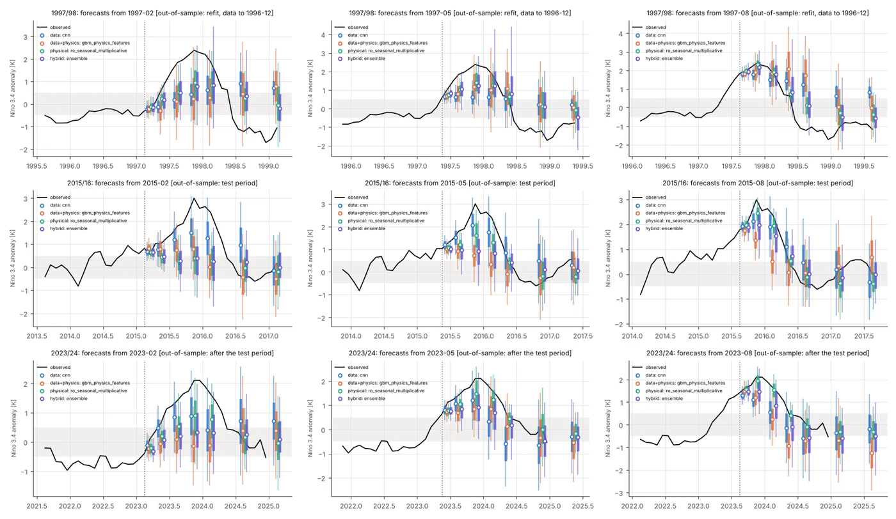

Study report · public example
Physical, data-driven, physics-informed and hybrid models scored with the same metric, the same windows and the same significance test.

Forecasting El Niño is the classic test of physical-system prediction: an irregular cycle, an ocean coupled to the atmosphere and a spring barrier where every model's skill drops. It is also where “my model is better” is usually said without a protocol.
This study puts thirty configurations on the same bench: statistical baselines, data-driven models, physical models, physics-informed and hybrid. They all see the same windows, are scored at the same horizons and go through the same significance test.
| Horizon | What changes |
|---|---|
| h = 1 to 3 months | persistence and climatology are still strong; differences between models are small |
| h = 6 months | crosses the spring barrier: this is where the protocol separates |
| h = 12 to 24 months | almost everyone loses skill; whoever still gains, gains little |
| Item | Definition |
|---|---|
| Data | OISST v2.1, WOD and ERA5; every file enters with its SHA-256 registered |
| Primary metric | ACC (anomaly correlation) per horizon |
| Skills | against persistence and against the best baseline at each horizon |
| Significance | Holm test on the differences, not on the mean |
| Uncertainty | 90% interval coverage and PIT deviation |
The four families enter with representatives chosen on validation, not on test — the test set is measured once, after selection.
| Configuration | Family | ACC h=1 | ACC h=3 | ACC h=6 | ACC h=12 | Significant |
|---|---|---|---|---|---|---|
| persistence | baseline | 0.93 | 0.73 | 0.36 | 0.01 | — |
| arima | baseline | 0.93 | 0.76 | 0.42 | 0.02 | no |
| cnn | data | 0.95 | 0.87 | 0.70 | 0.26 | h = 1 |
| pretrained cnn | data+physics | 0.95 | 0.85 | 0.66 | 0.30 | h = 1, 2, 3 |
| multiplicative seasonal ro | physical | 0.95 | 0.84 | 0.63 | 0.30 | no |
| ensemble | hybrid | 0.95 | 0.84 | 0.58 | 0.20 | h = 1, 2, 3 |
| pinn_ro (state estimator) | data+physics | 0.94 | −0.69 | −0.35 | −0.01 | no |
| climatology | baseline | 0.00 | 0.00 | 0.00 | 0.00 | — |
At h = 1 almost everything ties near 0.95: at that horizon persistence is already good and the gap between models is noise. At h = 6 the separation appears — and only three configurations beat the best baseline significantly.
| Family | Representative | CRPS skill vs climatology (h = 1, 3, 6) | Mean coverage | PIT deviation |
|---|---|---|---|---|
| baseline | arima | 0.64 · 0.32 · 0.06 | 0.94 | 0.20 |
| data | cnn | 0.69 · 0.45 · 0.09 | 0.98 | 0.28 |
| physical | seasonal ro | 0.67 · 0.44 · 0.20 | 0.88 | 0.17 |
| hybrid | ensemble | 0.68 · 0.45 · 0.19 | 0.95 | 0.12 |
| data+physics | gbm with physical features | 0.64 · 0.28 · −0.08 | 0.92 | 0.23 |
The data model's 0.98 coverage looks excellent until you read the 0.28 PIT: the intervals are too wide. The hybrid at 0.12 PIT is the best calibrated in the set — and it is not the one with the highest ACC.
| Item | What the report says |
|---|---|
| Spring barrier | measured separately; it is where skill drops for everyone |
| Long horizon | beyond 12 months the gain is small and vanishes in several configurations |
| Data | OISST, WOD and ERA5 with SHA-256; outside those sources the protocol does not hold |
| Model selection | done on validation; test and extrapolation never enter the choice |
| PINNs | two state-estimator variants fail visibly — stated |
| Application | index forecasting, not regional impact (rain, crops, power) |
Which family to use at each horizon, with what uncertainty and with what real gain over what already exists. At h = 1 the answer is “use the cheapest”; at h = 6, only three configurations hold up.
| What | Where |
|---|---|
| Full table | PINNeAPPle/examples/enso_forecasting/results/tables.md |
| Study | results/study.json · phase.json · spring_barrier.json |
| Data | OISST v2.1, WOD, ERA5 — with SHA-256 in the cache |
| Public article | pinneapple-labs.github.io/artigos/el-nino-28-modelos/ |